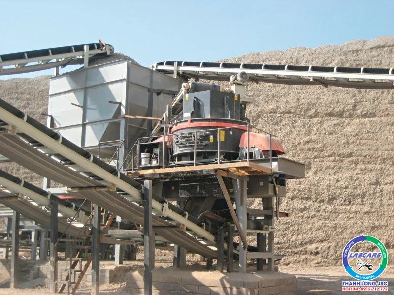
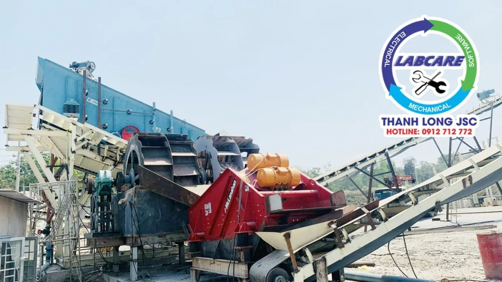

Khảo sát cao tốc Đồng Đăng – Trà Lĩnh.
Là tuyến cao tốc dài hơn 121km (qua địa phận Lạng Sơn khoảng 52 km, qua địa phận Cao Bằng hơn 69 km). Đồng thời, điều chỉnh quy mô phân kỳ dự án, giai đoạn 1 đầu tư 93,35km (từ Km0 tại nút giao cửa khẩu Tân Thanh, Lạng Sơn đến khoảng Km93+350 điểm giao với quốc lộ 3 huyện Quảng Hoà, Cao Bằng). Giai đoạn 2, đầu tư tiếp 27,71km còn lại (từ khoảng Km93+350 đến Km121+060, điểm cuối tại ranh giới quy hoạch Khu kinh tế cửa khẩu Trà Lĩnh, huyện Trùng Khánh).
UBND tỉnh Cao Bằng dự kiến tổ chức lựa chọn nhà đầu tư từ quý III năm nay, hoàn thành năm 2025 và đưa và khai thác, vận hành từ năm 2026.
Dự án đường bộ cao tốc Đồng Đăng – Trà Lĩnh giai đoạn 1 có chiều dài khoảng 93,35 km đi qua hai tỉnh Lạng Sơn, Cao Bằng vừa được phê duyệt với tổng mức đầu tư hơn 14.300 tỷ đồng.
Thực trạng tỉnh Cao Bằng
Cao Bằng là địa phương còn nhiều khó khăn, với vị trí địa lý là tỉnh biên giới xa xôi. Việc đầu tư xây dựng dự án phát triển hạ tầng kết nối của tỉnh đóng vai trò rất quan trọng, liên kết để tạo cơ hội phát triển. Dự án này khi hoàn thành sẽ đáp ứng nhu cầu vận tải kết nối trung tâm kinh tế, chính trị với các tỉnh miền núi phía đông bắc. Các khu kinh tế, khu du lịch quốc gia, khu công nghiệp, phục vụ cho mục tiêu thúc đẩy phát triển kinh tế – xã hội. Bảo đảm quốc phòng – an ninh và giữ vững chủ quyền biên giới quốc gia.
Để hoàn thành dự án Cao tốc đồng đăng trà lĩnh, phải huy động các mỏ các công ty trúng thầu, chung tay góp sức, nâng cao hiệu quả sản xuất để cung cấp vật liệu cho cao tốc.
Để cao tốc đồng đăng trà lĩnh hoàn thành dự án đúng tiến độ. Các chủ mỏ, chủ doanh nghiệp phải tích cực sản xuất đá, cát đạt năng suất.
Để đạt được năng suất cung cấp cho cao tốc, các doanh nghiệp đang nâng cao hiệu quả sản xuất bằng cách lắp đặt dây chuyền nghiền mới, để tạo ra được nhiều sản phẩm, nâng cao hiệu suất.
Vậy, để cung cấp số lượng đá và cát lớn cho cao tốc, cần có một dây chuyền nghiền đá và cát đạt tiêu chuẩn đầu ra cũng như chất lượng sản phẩm. Phục vụ cho xây dựng cao tốc, đạt tiêu chuẩn cũng như tiến độ xây dựng
DÂY CHUYỀN NGHIỀN ĐÁ VÀ CÁT XÂY DỰNG
Để có dây chuyền nghiền đá và cát xây dựng phù hợp, Máy nghiền đá Thanh Long đã đi khảo sát, đưa ra một dây chuyền nghiền đá và cát hoàn chỉnh như sau:

Một dây chuyền hoàn chỉnh như vậy, thì mỗi thiết bị có một chức năng và nhiệm vụ khác nhau:
Máy nghiền hàm

Máy nghiền hàm được cấu tạo nên từ 7 bộ phận sau:
Khung máy của máy kẹp hàm
Tấm hàm cố định của máy kẹp
Tấm hàm động của máy kẹp
Hàm động của máy kẹp hàm
Trục lệch tâm của máy
Tấm đòn khuỷu của máy
Điều chỉnh đòn khuỷu.
Máy nghiền hàm được hoạt động theo quá trình: chuyển động dây trần và ròng rọc băng chuyền bằng cách thông qua các trục lăn chuyển động lệch tâm. Để có thể tạo ra được sự chuyển động lên xuống cho tấm hàm động. Sau đó khi tấm hàm động hạ xuống thì góc giữa hai tấm hàm cố định và hàm di động sẽ nhỏ lại, và các vật liệu sẽ được nghiền. Trong khi đó thì, khi mà tấm hành động nâng lên thì góc giữa hai hai tấm hàm cố định và hàm di động sẽ được to lên.
Dưới sự tác động của lo xo và cần đẩy, thì tấm hành động sẽ được tách khỏi tấm hàm cố định, khi đó vật liệu được nghiền nhỏ tùy theo kích thước yêu cầu. Và cho ra từ cửa dưới của khoang nghiền.
Máy nghiền côn

Máy nghiền côn có cấu tạo không quá phức tạp. Bên ngoài là một khung máy kim loại. Các thiết bị khác bao gồm thiết bị truyền dẫn, trục lệch tâm, buồng nghiền hình côn, lò xo, trạm tăng áp thuỷ lực để điều chỉnh cửa ra của thành phẩm
Khi máy chạy trục lêch tâm sẽ quay dưới lực từ động cơ. Quá trình này sẽ điều khiển bởi một trục nằm ngang và các bánh răng. Buồng nghiền côn và trục lệch tâm sẽ tạo ra các khe kẹp vật liệu trong quá trình nghiền. Với lực ép lớn các vật liệu sẽ nát ra và rơi xuống. Máy sẽ nghiền nát bằng cách dùng các bề mặt di chuyển giữa trục và trụ hình nón. Khi nào các vật liệu nát nhỏ đủ để ra khỏi cửa thoát thì nó sẽ ra ngoài. Quá trình sẽ tiếp tục như vậy
Máy nghiền VSI trong dây chuyền nghiền đá và cát

Máy nghiền VSI so với các sản phẩm nghiền cát khác thì sản lượng máy VSI cao hơn, hình dạng sản phẩm ra đẹp hơn, sử dụng chi phí thấp. Máy được thiết kế cho các tòa nhà cao tốc, đường sắt, cao tầng, đô thị, xây dựng đập thủy điện, trạm trộn bê tông để cung cấp cát chất lượng cao.
Loại máy nghiền này được sử dụng rộng dãi cho các nguyên liệu có độ cứng cao như quặng đá, xi măng, vật liệu chịu lửa, nguyên liệu đã tôi, đất nhôm phèn, đá cát anh, ngọc tông cương… và các nguyên liệu đặc biệt cứng trong công nghiệp nghiền mịn. Máy được sử dụng phổ biến hơn trong nghiền cát, chỉnh hình vật liệu đá, cung các loại luyện sỉ kim. Đặc biệt đối với vật liệu đặc biệt cứng hiệu suất sản lượng cao, có tính ưu việt hơn so với các máy nghiền khác
Máy rửa guồng quay

Trong quy trình sản xuất đá và cát xây dựng, rửa cát là công đoạn rất quan trọng trong toàn bộ quy trình. Nguyên liệu do máy làm cát xử lý được vận chuyển đến sàng rung để sàng tuyển, cát đá thành phẩm đạt yêu cầu được đưa sang máy rửa cát để làm sạch, sau khi làm sạch sẽ cho ra thành phẩm.
Trong thùng máy, cát và đá theo sự truyền động của bánh xe và nghiền lẫn nhau để loại bỏ các tạp chất phủ trên bề mặt cát thành phẩm, đồng thời phá hủy lớp hơi nước bao phủ các hạt cát tạo điều kiện cho quá trình khử nước.
Các chất lạ có khối lượng riêng nhỏ được đưa đi và xả ra khỏi bể rửa tràn để hoàn thành tác dụng làm sạch. Máy rửa cát guồng quay là một trong những thiết bị quan trọng trong dây chuyền sản xuất đá và cát xây dựng, cát thành phẩm sau khi qua máy rửa cát sẽ thu được cát rất sạch, đạt yêu cầu trong xây dựng cao tốc.
Đơn vị cung cấp dây chuyền nghiền đá và cát xây dựng
Máy nghiền đá Thanh Long chuyên cung cấp các thiết bị nghiền đá và cát phục vụ cho cao tốc, bê tông, công trình xây dựng,…. Máy nghiền đá Thanh Long luôn tạo ra sự khác biệt, nhằm đáp ứng nhu cầu của khách hàng. Lấy niềm tin của khách hàng làm trọng tâm. Để đưa ra được phương án và sự lựa chọn tốt nhất, hãy liên hệ với chúng tôi.
Hotline: 0912 – 712 – 772